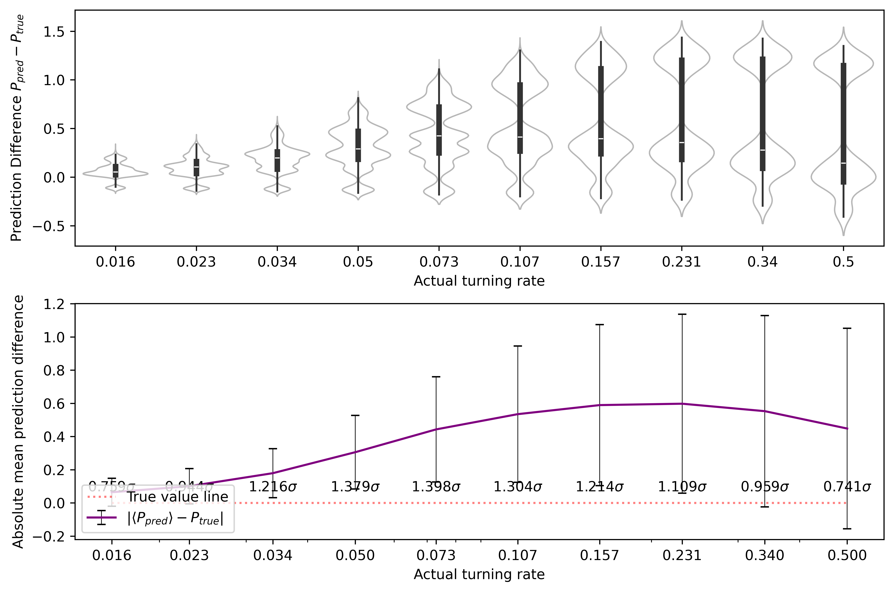

import numpy as npimport h5pyimport globimport reimport tensorflow as tfimport matplotlib.pyplot as pltimport matplotlib.ticker as tickerfrom scipy.stats import pearsonrimport syssys.path.append('./..')from src.training_utils import data_load, extract_floats, split_dataset, predict_multi_by_name, plot_violin_and_statistics,cross_mean_err_calculatorfrom tensorflow import kerasfrom keras import backend as Kfrom tensorflow.keras.models import Sequentialfrom tensorflow.keras.layers import Dense,Conv2D,Flatten,Dropout,MaxPooling2D,BatchNormalization,AveragePooling2D,LeakyReLU,GlobalAveragePooling2D,ReLUfrom cmcrameri import cmimport seaborn as snsimport pandas as pdnp.set_printoptions(precision=3, suppress=True)
2024-04-15 22:46:20.013183: I tensorflow/core/util/port.cc:113] oneDNN custom operations are on. You may see slightly different numerical results due to floating-point round-off errors from different computation orders. To turn them off, set the environment variable `TF_ENABLE_ONEDNN_OPTS=0`.
2024-04-15 22:46:20.126745: I tensorflow/core/platform/cpu_feature_guard.cc:210] This TensorFlow binary is optimized to use available CPU instructions in performance-critical operations.
To enable the following instructions: AVX2 AVX_VNNI FMA, in other operations, rebuild TensorFlow with the appropriate compiler flags.
2024-04-15 22:46:22.013569: W tensorflow/compiler/tf2tensorrt/utils/py_utils.cc:38] TF-TRT Warning: Could not find TensorRT
Set seed (optional)
fixed_seed =216#choose seed (comment out if not needed)if'fixed_seed'inlocals(): keras.utils.set_random_seed(fixed_seed)print("Running program with fixed seed:",fixed_seed)else:print("Running program with random seed.")
Running program with fixed seed: 216
Setup GPU
First, follow instructions here, or alternatively run:
for a in /sys/bus/pci/devices/*;doecho 0 |sudo tee -a$a/numa_node;done
2024-04-15 22:46:24.894395: I external/local_xla/xla/stream_executor/cuda/cuda_executor.cc:998] successful NUMA node read from SysFS had negative value (-1), but there must be at least one NUMA node, so returning NUMA node zero. See more at https://github.com/torvalds/linux/blob/v6.0/Documentation/ABI/testing/sysfs-bus-pci#L344-L355
2024-04-15 22:46:25.097387: I external/local_xla/xla/stream_executor/cuda/cuda_executor.cc:998] successful NUMA node read from SysFS had negative value (-1), but there must be at least one NUMA node, so returning NUMA node zero. See more at https://github.com/torvalds/linux/blob/v6.0/Documentation/ABI/testing/sysfs-bus-pci#L344-L355
2024-04-15 22:46:25.097511: I external/local_xla/xla/stream_executor/cuda/cuda_executor.cc:998] successful NUMA node read from SysFS had negative value (-1), but there must be at least one NUMA node, so returning NUMA node zero. See more at https://github.com/torvalds/linux/blob/v6.0/Documentation/ABI/testing/sysfs-bus-pci#L344-L355
2024-04-15 22:46:25.100146: I external/local_xla/xla/stream_executor/cuda/cuda_executor.cc:998] successful NUMA node read from SysFS had negative value (-1), but there must be at least one NUMA node, so returning NUMA node zero. See more at https://github.com/torvalds/linux/blob/v6.0/Documentation/ABI/testing/sysfs-bus-pci#L344-L355
2024-04-15 22:46:25.100239: I external/local_xla/xla/stream_executor/cuda/cuda_executor.cc:998] successful NUMA node read from SysFS had negative value (-1), but there must be at least one NUMA node, so returning NUMA node zero. See more at https://github.com/torvalds/linux/blob/v6.0/Documentation/ABI/testing/sysfs-bus-pci#L344-L355
2024-04-15 22:46:25.100292: I external/local_xla/xla/stream_executor/cuda/cuda_executor.cc:998] successful NUMA node read from SysFS had negative value (-1), but there must be at least one NUMA node, so returning NUMA node zero. See more at https://github.com/torvalds/linux/blob/v6.0/Documentation/ABI/testing/sysfs-bus-pci#L344-L355
2024-04-15 22:46:25.201387: I external/local_xla/xla/stream_executor/cuda/cuda_executor.cc:998] successful NUMA node read from SysFS had negative value (-1), but there must be at least one NUMA node, so returning NUMA node zero. See more at https://github.com/torvalds/linux/blob/v6.0/Documentation/ABI/testing/sysfs-bus-pci#L344-L355
2024-04-15 22:46:25.201471: I external/local_xla/xla/stream_executor/cuda/cuda_executor.cc:998] successful NUMA node read from SysFS had negative value (-1), but there must be at least one NUMA node, so returning NUMA node zero. See more at https://github.com/torvalds/linux/blob/v6.0/Documentation/ABI/testing/sysfs-bus-pci#L344-L355
2024-04-15 22:46:25.201526: I external/local_xla/xla/stream_executor/cuda/cuda_executor.cc:998] successful NUMA node read from SysFS had negative value (-1), but there must be at least one NUMA node, so returning NUMA node zero. See more at https://github.com/torvalds/linux/blob/v6.0/Documentation/ABI/testing/sysfs-bus-pci#L344-L355
2024-04-15 22:46:25.201574: I tensorflow/core/common_runtime/gpu/gpu_device.cc:1928] Created device /device:GPU:0 with 6187 MB memory: -> device: 0, name: NVIDIA GeForce RTX 4060 Laptop GPU, pci bus id: 0000:01:00.0, compute capability: 8.9
Define Functions
def violin_plotter (v,y_val,adjustment,legloc="upper left"): bins = np.logspace(-6,-1,10, base=2)*0.85#v = prediction2.T[0] colors = cm.batlowS(np.digitize(v, bins)) colors_actual = cm.batlowS(np.digitize(np.unique(y_val),bins)) fig, (ax1,ax2) = plt.subplots(nrows=2,ncols=1,figsize=(9,6),dpi=600) df = pd.DataFrame() df.insert(0, "predicted", v - y_val) df.insert(1, "actual", y_val) sns.violinplot( ax=ax1, data=df, x="actual", y="predicted", color="w", alpha=0.7, density_norm="width", linewidth=1, inner="box", inner_kws={"box_width": 4, "color": "0.2"}, ) ax1.set_xlabel("Actual turning rate") ax1.set_ylabel(r"Prediction Difference $P_{pred}-P_{true}$") std = [] means = [] overlap = [] std_div = [] accuracy =5e-3print ("Prediction means and standard deviations.")for val in np.unique(y_val): v_mapped = v[np.where(y_val == val)] stdev = np.std(v_mapped) std.append(stdev) mean = np.mean(v_mapped) overlap.append((val + accuracy >= np.min(v_mapped)) & (val - accuracy <= np.max(v_mapped))) within_std =abs(val-mean)/stdevprint (f"Actual value {val}: Average = {mean:.5f} +- {stdev:.5f}; Expected value within {within_std:.3f} stdevs of mean") std_div.append(within_std)print(f"With accuracy {accuracy}, overlap ratio:", np.sum(overlap)/len(overlap))print("(Min, Max, Avg) STD:", np.min(std), np.max(std), np.mean(std))print("Pearson's correlation coeff: ", pearsonr(y_val, v).statistic)for val in np.unique(y_val): v_mapped = v[np.where(y_val == val)] means.append(np.mean(v_mapped)) ax2.errorbar(np.sort(np.unique(y_val)),np.abs(means-np.sort(np.unique(y_val))),yerr=(std),ecolor='black',elinewidth=0.5,capsize=3,color='purple',label=r'$|\langle P_{pred} \rangle -P_{true}|$') ax2.plot(np.sort(np.unique(y_val)),np.zeros(np.unique(y_val).shape[0]),color='red',label='True value line',linestyle='dotted',alpha=0.5) ax2.legend(loc=legloc) counter =0for i in np.sort(np.unique(y_val)): ax2.text(i,adjustment,f"${std_div[counter]:.3f} \sigma$",ha="center") counter = counter +1 ax2.set_xscale("log") ax2.get_xaxis().set_major_formatter(ticker.ScalarFormatter()) ax2.set_xticks(np.unique(y_val)) ax2.set_xlabel("Actual turning rate") ax2.set_ylabel("Absolute mean prediction difference") fig.tight_layout()
Import and prepare data
set model1 to have orientation, model2 to be monochrome, model3 to be scrambled
We have N * number of unique alpha snapshots total, we split them into training set and a validation set with the ratio 80/20:
print("Orientation model:")x_train1, y_train1, x_val1, y_val1 = split_dataset(x1,y1,last=int(len(x1)*1)) #len(x)*1 means no training, only validation!x_train2, y_train2, x_val2, y_val2 = split_dataset(x2,y2,last=int(len(x1)*1)) #len(x)*1 means no training, only validation!x_train3, y_train3, x_val3, y_val3 = split_dataset(x3,y3,last=int(len(x1)*1)) #len(x)*1 means no training, only validation!
Orientation model:
Number of unique alpha: 10
Shape of x: (10000, 128, 128, 1)
Shape of y: (10000,)
Size of training data: 0
Size of validation data: 10000
Number of unique alpha: 10
Shape of x: (10000, 128, 128, 1)
Shape of y: (10000,)
Size of training data: 0
Size of validation data: 10000
Number of unique alpha: 10
Shape of x: (10000, 128, 128, 1)
Shape of y: (10000,)
Size of training data: 0
Size of validation data: 10000
models_one = ['orientation0216','orientation0226','orientation0236','orientation0246','orientation0256','orientation0266','orientation0276','orientation0286','orientation0296','orientation0306'] #array of model namesmodels_two = ['monochrome0216','monochrome0226','monochrome0236','monochrome0246','monochrome0256','monochrome0266','monochrome0276','monochrome0286','monochrome0296','monochrome0306'] # array of model namesmodels_three = ['scrambled0216','scrambled0226','scrambled0236','scrambled0246','scrambled0256','scrambled0266','scrambled0276','scrambled0286','scrambled0296','scrambled0306'] # array of model namesone_pred_of_one, one_actuals_of_one = predict_multi_by_name(models_one,x_val1,y_val1)one_pred_of_two, one_actuals_of_two = predict_multi_by_name(models_one,x_val2,y_val2)one_pred_of_three, one_actuals_of_three = predict_multi_by_name(models_one,x_val3,y_val3)two_pred_of_two, two_actuals_of_two = predict_multi_by_name(models_two,x_val2,y_val2)two_pred_of_one, two_actuals_of_one = predict_multi_by_name(models_two,x_val1,y_val1)two_pred_of_three, two_actuals_of_three = predict_multi_by_name(models_two,x_val3,y_val3)three_pred_of_three, three_actuals_of_three = predict_multi_by_name(models_three,x_val3,y_val3)three_pred_of_one, three_actuals_of_one = predict_multi_by_name(models_three,x_val1,y_val1)three_pred_of_two, three_actuals_of_two = predict_multi_by_name(models_three,x_val2,y_val2)
2024-04-15 22:46:33.673278: I external/local_xla/xla/stream_executor/cuda/cuda_executor.cc:998] successful NUMA node read from SysFS had negative value (-1), but there must be at least one NUMA node, so returning NUMA node zero. See more at https://github.com/torvalds/linux/blob/v6.0/Documentation/ABI/testing/sysfs-bus-pci#L344-L355
2024-04-15 22:46:33.673415: I external/local_xla/xla/stream_executor/cuda/cuda_executor.cc:998] successful NUMA node read from SysFS had negative value (-1), but there must be at least one NUMA node, so returning NUMA node zero. See more at https://github.com/torvalds/linux/blob/v6.0/Documentation/ABI/testing/sysfs-bus-pci#L344-L355
2024-04-15 22:46:33.673470: I external/local_xla/xla/stream_executor/cuda/cuda_executor.cc:998] successful NUMA node read from SysFS had negative value (-1), but there must be at least one NUMA node, so returning NUMA node zero. See more at https://github.com/torvalds/linux/blob/v6.0/Documentation/ABI/testing/sysfs-bus-pci#L344-L355
2024-04-15 22:46:33.673546: I external/local_xla/xla/stream_executor/cuda/cuda_executor.cc:998] successful NUMA node read from SysFS had negative value (-1), but there must be at least one NUMA node, so returning NUMA node zero. See more at https://github.com/torvalds/linux/blob/v6.0/Documentation/ABI/testing/sysfs-bus-pci#L344-L355
2024-04-15 22:46:33.673596: I external/local_xla/xla/stream_executor/cuda/cuda_executor.cc:998] successful NUMA node read from SysFS had negative value (-1), but there must be at least one NUMA node, so returning NUMA node zero. See more at https://github.com/torvalds/linux/blob/v6.0/Documentation/ABI/testing/sysfs-bus-pci#L344-L355
2024-04-15 22:46:33.673640: I tensorflow/core/common_runtime/gpu/gpu_device.cc:1928] Created device /job:localhost/replica:0/task:0/device:GPU:0 with 6187 MB memory: -> device: 0, name: NVIDIA GeForce RTX 4060 Laptop GPU, pci bus id: 0000:01:00.0, compute capability: 8.9
WARNING: All log messages before absl::InitializeLog() is called are written to STDERR
I0000 00:00:1713217594.529131 80228 service.cc:145] XLA service 0x7f223c004550 initialized for platform CUDA (this does not guarantee that XLA will be used). Devices:
I0000 00:00:1713217594.529189 80228 service.cc:153] StreamExecutor device (0): NVIDIA GeForce RTX 4060 Laptop GPU, Compute Capability 8.9
2024-04-15 22:46:34.535575: I tensorflow/compiler/mlir/tensorflow/utils/dump_mlir_util.cc:268] disabling MLIR crash reproducer, set env var `MLIR_CRASH_REPRODUCER_DIRECTORY` to enable.
2024-04-15 22:46:34.563498: I external/local_xla/xla/stream_executor/cuda/cuda_dnn.cc:465] Loaded cuDNN version 8907
I0000 00:00:1713217595.037178 80228 device_compiler.h:188] Compiled cluster using XLA! This line is logged at most once for the lifetime of the process.
Prediction means and standard deviations.
Actual value 0.016: Average = 0.02456 +- 0.00642; Expected value within 1.332 stdevs of mean
Actual value 0.023: Average = 0.02843 +- 0.00667; Expected value within 0.814 stdevs of mean
Actual value 0.034: Average = 0.03458 +- 0.00918; Expected value within 0.063 stdevs of mean
Actual value 0.05: Average = 0.04871 +- 0.01061; Expected value within 0.122 stdevs of mean
Actual value 0.073: Average = 0.07470 +- 0.00977; Expected value within 0.174 stdevs of mean
Actual value 0.107: Average = 0.10643 +- 0.01089; Expected value within 0.053 stdevs of mean
Actual value 0.157: Average = 0.15763 +- 0.02257; Expected value within 0.028 stdevs of mean
Actual value 0.231: Average = 0.24722 +- 0.03908; Expected value within 0.415 stdevs of mean
Actual value 0.34: Average = 0.34435 +- 0.04488; Expected value within 0.097 stdevs of mean
Actual value 0.5: Average = 0.42931 +- 0.04386; Expected value within 1.612 stdevs of mean
With accuracy 0.005, overlap ratio: 1.0
(Min, Max, Avg) STD: 0.0064237094 0.044880554 0.020391997
Pearson's correlation coeff: 0.9760410596606366
Prediction means and standard deviations.
Actual value 0.016: Average = 0.09348 +- 0.07892; Expected value within 0.982 stdevs of mean
Actual value 0.023: Average = 0.13953 +- 0.09727; Expected value within 1.198 stdevs of mean
Actual value 0.034: Average = 0.22812 +- 0.13519; Expected value within 1.436 stdevs of mean
Actual value 0.05: Average = 0.35233 +- 0.18960; Expected value within 1.595 stdevs of mean
Actual value 0.073: Average = 0.48409 +- 0.25911; Expected value within 1.587 stdevs of mean
Actual value 0.107: Average = 0.59604 +- 0.33456; Expected value within 1.462 stdevs of mean
Actual value 0.157: Average = 0.69448 +- 0.39884; Expected value within 1.348 stdevs of mean
Actual value 0.231: Average = 0.77328 +- 0.44618; Expected value within 1.215 stdevs of mean
Actual value 0.34: Average = 0.83519 +- 0.47979; Expected value within 1.032 stdevs of mean
Actual value 0.5: Average = 0.88966 +- 0.50315; Expected value within 0.774 stdevs of mean
With accuracy 0.005, overlap ratio: 1.0
(Min, Max, Avg) STD: 0.07891551 0.50314945 0.29226005
Pearson's correlation coeff: 0.5594808989243881
Prediction means and standard deviations.
Actual value 0.016: Average = 0.02989 +- 0.00943; Expected value within 1.473 stdevs of mean
Actual value 0.023: Average = 0.03307 +- 0.01004; Expected value within 1.003 stdevs of mean
Actual value 0.034: Average = 0.04103 +- 0.01240; Expected value within 0.567 stdevs of mean
Actual value 0.05: Average = 0.05760 +- 0.01554; Expected value within 0.489 stdevs of mean
Actual value 0.073: Average = 0.08545 +- 0.01486; Expected value within 0.838 stdevs of mean
Actual value 0.107: Average = 0.12253 +- 0.02118; Expected value within 0.733 stdevs of mean
Actual value 0.157: Average = 0.18762 +- 0.03896; Expected value within 0.786 stdevs of mean
Actual value 0.231: Average = 0.28089 +- 0.05267; Expected value within 0.947 stdevs of mean
Actual value 0.34: Average = 0.36835 +- 0.05265; Expected value within 0.538 stdevs of mean
Actual value 0.5: Average = 0.44215 +- 0.04406; Expected value within 1.313 stdevs of mean
With accuracy 0.005, overlap ratio: 1.0
(Min, Max, Avg) STD: 0.009426357 0.052668102 0.027177865
Pearson's correlation coeff: 0.9618424853347743
Prediction means and standard deviations.
Actual value 0.016: Average = 0.02350 +- 0.00620; Expected value within 1.211 stdevs of mean
Actual value 0.023: Average = 0.02798 +- 0.00663; Expected value within 0.750 stdevs of mean
Actual value 0.034: Average = 0.03459 +- 0.00969; Expected value within 0.061 stdevs of mean
Actual value 0.05: Average = 0.04984 +- 0.01070; Expected value within 0.015 stdevs of mean
Actual value 0.073: Average = 0.07462 +- 0.00934; Expected value within 0.173 stdevs of mean
Actual value 0.107: Average = 0.10662 +- 0.00982; Expected value within 0.039 stdevs of mean
Actual value 0.157: Average = 0.15530 +- 0.02019; Expected value within 0.084 stdevs of mean
Actual value 0.231: Average = 0.24482 +- 0.03617; Expected value within 0.382 stdevs of mean
Actual value 0.34: Average = 0.34497 +- 0.04245; Expected value within 0.117 stdevs of mean
Actual value 0.5: Average = 0.43545 +- 0.04208; Expected value within 1.534 stdevs of mean
With accuracy 0.005, overlap ratio: 1.0
(Min, Max, Avg) STD: 0.0061964267 0.042451724 0.019327132
Pearson's correlation coeff: 0.979452577025313
Prediction means and standard deviations.
Actual value 0.016: Average = 0.18009 +- 0.23467; Expected value within 0.699 stdevs of mean
Actual value 0.023: Average = 0.17961 +- 0.23419; Expected value within 0.669 stdevs of mean
Actual value 0.034: Average = 0.18227 +- 0.23712; Expected value within 0.625 stdevs of mean
Actual value 0.05: Average = 0.18925 +- 0.24394; Expected value within 0.571 stdevs of mean
Actual value 0.073: Average = 0.19958 +- 0.25440; Expected value within 0.498 stdevs of mean
Actual value 0.107: Average = 0.21311 +- 0.26790; Expected value within 0.396 stdevs of mean
Actual value 0.157: Average = 0.22679 +- 0.28158; Expected value within 0.248 stdevs of mean
Actual value 0.231: Average = 0.23869 +- 0.29332; Expected value within 0.026 stdevs of mean
Actual value 0.34: Average = 0.24777 +- 0.30243; Expected value within 0.305 stdevs of mean
Actual value 0.5: Average = 0.25426 +- 0.30914; Expected value within 0.795 stdevs of mean
With accuracy 0.005, overlap ratio: 1.0
(Min, Max, Avg) STD: 0.23419179 0.30913684 0.2658687
Pearson's correlation coeff: 0.09536598963849022
Prediction means and standard deviations.
Actual value 0.016: Average = 0.18592 +- 0.23755; Expected value within 0.715 stdevs of mean
Actual value 0.023: Average = 0.18527 +- 0.23711; Expected value within 0.684 stdevs of mean
Actual value 0.034: Average = 0.18743 +- 0.23925; Expected value within 0.641 stdevs of mean
Actual value 0.05: Average = 0.19378 +- 0.24587; Expected value within 0.585 stdevs of mean
Actual value 0.073: Average = 0.20346 +- 0.25603; Expected value within 0.510 stdevs of mean
Actual value 0.107: Average = 0.21630 +- 0.26914; Expected value within 0.406 stdevs of mean
Actual value 0.157: Average = 0.22934 +- 0.28279; Expected value within 0.256 stdevs of mean
Actual value 0.231: Average = 0.24056 +- 0.29453; Expected value within 0.032 stdevs of mean
Actual value 0.34: Average = 0.24856 +- 0.30292; Expected value within 0.302 stdevs of mean
Actual value 0.5: Average = 0.25451 +- 0.30930; Expected value within 0.794 stdevs of mean
With accuracy 0.005, overlap ratio: 1.0
(Min, Max, Avg) STD: 0.23710676 0.3092999 0.26744854
Pearson's correlation coeff: 0.08835328446326232
Prediction means and standard deviations.
Actual value 0.016: Average = 0.02384 +- 0.00516; Expected value within 1.519 stdevs of mean
Actual value 0.023: Average = 0.02754 +- 0.00571; Expected value within 0.794 stdevs of mean
Actual value 0.034: Average = 0.03396 +- 0.00876; Expected value within 0.004 stdevs of mean
Actual value 0.05: Average = 0.04881 +- 0.00979; Expected value within 0.122 stdevs of mean
Actual value 0.073: Average = 0.07388 +- 0.00935; Expected value within 0.094 stdevs of mean
Actual value 0.107: Average = 0.10586 +- 0.01111; Expected value within 0.103 stdevs of mean
Actual value 0.157: Average = 0.15874 +- 0.02497; Expected value within 0.070 stdevs of mean
Actual value 0.231: Average = 0.25025 +- 0.04177; Expected value within 0.461 stdevs of mean
Actual value 0.34: Average = 0.34369 +- 0.04586; Expected value within 0.080 stdevs of mean
Actual value 0.5: Average = 0.42774 +- 0.04429; Expected value within 1.632 stdevs of mean
With accuracy 0.005, overlap ratio: 1.0
(Min, Max, Avg) STD: 0.00516255 0.045860507 0.020676006
Pearson's correlation coeff: 0.9742962386246623
Prediction means and standard deviations.
Actual value 0.016: Average = 0.02110 +- 0.00533; Expected value within 0.956 stdevs of mean
Actual value 0.023: Average = 0.02528 +- 0.00529; Expected value within 0.431 stdevs of mean
Actual value 0.034: Average = 0.03168 +- 0.00781; Expected value within 0.297 stdevs of mean
Actual value 0.05: Average = 0.04454 +- 0.00996; Expected value within 0.548 stdevs of mean
Actual value 0.073: Average = 0.06965 +- 0.01017; Expected value within 0.330 stdevs of mean
Actual value 0.107: Average = 0.10205 +- 0.01315; Expected value within 0.376 stdevs of mean
Actual value 0.157: Average = 0.15467 +- 0.02632; Expected value within 0.088 stdevs of mean
Actual value 0.231: Average = 0.24644 +- 0.04115; Expected value within 0.375 stdevs of mean
Actual value 0.34: Average = 0.34208 +- 0.04514; Expected value within 0.046 stdevs of mean
Actual value 0.5: Average = 0.42605 +- 0.04390; Expected value within 1.685 stdevs of mean
With accuracy 0.005, overlap ratio: 1.0
(Min, Max, Avg) STD: 0.0052876463 0.04514385 0.020821607
Pearson's correlation coeff: 0.974669140805848
Prediction means and standard deviations.
Actual value 0.016: Average = 0.08016 +- 0.08455; Expected value within 0.759 stdevs of mean
Actual value 0.023: Average = 0.12334 +- 0.10635; Expected value within 0.944 stdevs of mean
Actual value 0.034: Average = 0.21303 +- 0.14725; Expected value within 1.216 stdevs of mean
Actual value 0.05: Average = 0.35540 +- 0.22140; Expected value within 1.379 stdevs of mean
Actual value 0.073: Average = 0.51578 +- 0.31674; Expected value within 1.398 stdevs of mean
Actual value 0.107: Average = 0.64173 +- 0.41015; Expected value within 1.304 stdevs of mean
Actual value 0.157: Average = 0.74630 +- 0.48528; Expected value within 1.214 stdevs of mean
Actual value 0.231: Average = 0.82865 +- 0.53899; Expected value within 1.109 stdevs of mean
Actual value 0.34: Average = 0.89274 +- 0.57645; Expected value within 0.959 stdevs of mean
Actual value 0.5: Average = 0.94804 +- 0.60427; Expected value within 0.741 stdevs of mean
With accuracy 0.005, overlap ratio: 1.0
(Min, Max, Avg) STD: 0.08455231 0.60426754 0.34914157
Pearson's correlation coeff: 0.5276387349419068

Combined plots
#predictions on own kind#means1,std1,means2,std2,means3,std3=cross_mean_err_calculator(one_pred_of_one,one_actuals_of_one,two_pred_of_two,two_actuals_of_two,three_pred_of_three,three_actuals_of_three,three_cases=True)fig, (ax1,ax2) = plt.subplots(nrows=1,ncols=2,figsize=(11,6),dpi=600)#NOTE: I've commented out the previous method of plotting due to its inelegance, but I have kept it for posterity as a way of plotting error bands without seaborn.#ONE ON ONE#ax1.errorbar(np.sort(np.unique(orientation_actuals_of_orientation)),np.abs(means1-np.sort(np.unique(orientation_actuals_of_orientation))),yerr=(std1),ecolor='blue',elinewidth=0.5,capsize=3,color='blue',label="Trained Orientation Predicting Orientation")#ax1.plot(np.sort(np.unique(one_actuals_of_one)),np.abs(means1-np.sort(np.unique(one_actuals_of_one))),'b-',label="Trained Orientation Predicting Orientation")#ax1.fill_between(np.sort(np.unique(one_actuals_of_one)),np.abs(means1-np.sort(np.unique(one_actuals_of_one)))-std1,np.abs(means1-np.sort(np.unique(one_actuals_of_one)))+std1,color='b',alpha=0.25)#TWO ON TWO#ax1.errorbar(np.sort(np.unique(monochrome_actuals_of_monochrome)),np.abs(means2-np.sort(np.unique(monochrome_actuals_of_monochrome))),yerr=(std2),ecolor='red',elinewidth=0.5,capsize=3,color='red',label="Trained Monochrome Predicting Monochrome")#ax1.plot(np.sort(np.unique(two_actuals_of_two)),np.abs(means2-np.sort(np.unique(two_actuals_of_two))),'r-',label="Trained Monochrome Predicting Monochrome")#ax1.fill_between(np.sort(np.unique(two_actuals_of_two)),np.abs(means2-np.sort(np.unique(two_actuals_of_two)))-std2,np.abs(means2-np.sort(np.unique(two_actuals_of_two)))+std2,color='r',alpha=0.25)#THREE ON THREE#ax1.plot(np.sort(np.unique(three_actuals_of_three)),np.abs(means3-np.sort(np.unique(three_actuals_of_three))),'g-',label="Trained Scrambled Predicting Scrambled")#ax1.fill_between(np.sort(np.unique(three_actuals_of_three)),np.abs(means3-np.sort(np.unique(three_actuals_of_three)))-std3,np.abs(means3-np.sort(np.unique(three_actuals_of_three)))+std3,color='g',alpha=0.25)#ZERO LINE, LEGEND, AX1 PLOT CONFIG#ax1.plot(np.sort(np.unique(one_actuals_of_one)),np.zeros(np.unique(one_actuals_of_one).shape[0]),color='black',label='True value line',linestyle='dotted',alpha=0.5)#ax1.legend(loc='upper left')#ax1.set_xscale("log")#ax1.get_xaxis().set_major_formatter(ticker.ScalarFormatter())#ax1.set_xticks(np.unique(y_val1))#ax1.set_xlabel("Actual turning rate")#ax1.set_ylabel("Absolute mean prediction difference")df_one = pd.DataFrame()df_two = pd.DataFrame()df_three = pd.DataFrame()df_one.insert(0,"predicted",np.abs(one_pred_of_one-one_actuals_of_one))df_one.insert(1,"actuals",one_actuals_of_one)df_two.insert(0,"predicted",np.abs(two_pred_of_two-two_actuals_of_two))df_two.insert(1,"actuals",np.abs(two_actuals_of_two))df_three.insert(0,"predicted",np.abs(three_pred_of_three-three_actuals_of_three))df_three.insert(1,"actuals",np.abs(three_actuals_of_three))df_one['Data Type']='Orientation'df_two['Data Type']='Monochrome'df_three['Data Type']='Scrambled'cdf = pd.concat([df_one,df_two,df_three])#print(cdf.head())sns.lineplot(ax=ax1, x="actuals", y="predicted", hue="Data Type", data=cdf, errorbar="sd", palette={"Orientation": "blue", "Monochrome": "red", "Scrambled": "green"})sns.boxplot(ax=ax2, data=cdf, x="actuals", y="predicted", hue="Data Type", fill=False, gap=.4, whis=(0,100), width=.5, palette={"Orientation": "blue", "Monochrome": "red", "Scrambled": "green"})ax1.set_xlabel("Actual turning rate",fontsize=16)ax2.set_xlabel("Actual turning rate",fontsize=16)ax1.set_ylabel("Absolute mean prediction difference",fontsize=16)ax2.set_ylabel("Absolute mean prediction difference",fontsize=16)ax2.set_title("IQR Comparison of Self-Prediction",fontsize=16)ax1.set_title("STD Comparison of Self-Prediction",fontsize=16)ax1.set_xscale("log")ax1.get_xaxis().set_major_formatter(ticker.ScalarFormatter())ax1.set_xticks(np.unique(y_val1))#handles,labels=ax2.get_legend_handles_labels()#ax2.legend(handles=handles[1:],labels=labels[1:]) #this should fix hue title appearing in rightmost figure legendax1.legend(loc="upper left",fontsize=16)ax2.legend(fontsize=16)#predictions on other kind#means1,std1,means2,std2,means3,std3=cross_mean_err_calculator(one_pred_of_two,one_actuals_of_two,two_pred_of_one,two_actuals_of_one,three_cases=False)#ONE ON TWO#ax2.errorbar(np.sort(np.unique(orientation_actuals_of_monochrome)),np.abs(means1-np.sort(np.unique(orientation_actuals_of_monochrome))),yerr=(std1),ecolor='blue',elinewidth=0.5,capsize=3,color='blue',label="Trained Orientation Predicting Monochrome")#ax2.plot(np.sort(np.unique(one_actuals_of_two)),np.abs(means1-np.sort(np.unique(one_actuals_of_two))),'b-',label="Trained Orientation Predicting Monochrome")#ax2.fill_between(np.sort(np.unique(one_actuals_of_two)),np.abs(means1-np.sort(np.unique(one_actuals_of_two)))-std1,np.abs(means1-np.sort(np.unique(one_actuals_of_two)))+std1,color='b',alpha=0.25)#TWO ON ONE#ax2.errorbar(np.sort(np.unique(monochrome_actuals_of_orientation)),np.abs(means2-np.sort(np.unique(monochrome_actuals_of_orientation))),yerr=(std2),ecolor='red',elinewidth=0.5,capsize=3,color='red',label="Trained Monochrome Predicting Orientation")#ax2.plot(np.sort(np.unique(two_actuals_of_one)),np.abs(means2-np.sort(np.unique(two_actuals_of_one))),'r-',label="Trained Monochrome Predicting Orientation")#ax2.fill_between(np.sort(np.unique(two_actuals_of_one)),np.abs(means2-np.sort(np.unique(two_actuals_of_one)))-std2,np.abs(means2-np.sort(np.unique(two_actuals_of_one)))+std2,color='r',alpha=0.25)#ZERO LINE, LEGEND, AX2 PLOT CONFIG#ax2.plot(np.sort(np.unique(one_actuals_of_two)),np.zeros(np.unique(one_actuals_of_two).shape[0]),color='black',label='True value line',linestyle='dotted',alpha=0.5)#ax2.legend(loc='upper left')#ax2.set_xscale("log")#ax2.get_xaxis().set_major_formatter(ticker.ScalarFormatter())#ax2.set_xticks(np.unique(y_val1))#ax2.set_xlabel("Actual turning rate")#ax2.set_ylabel("Absolute mean prediction difference")fig.tight_layout()